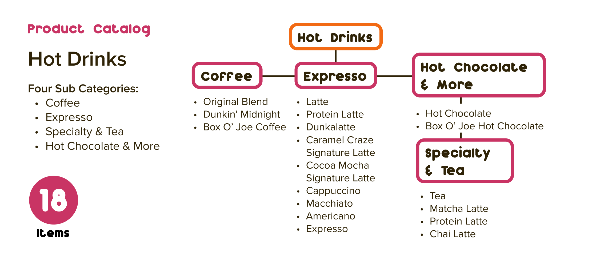
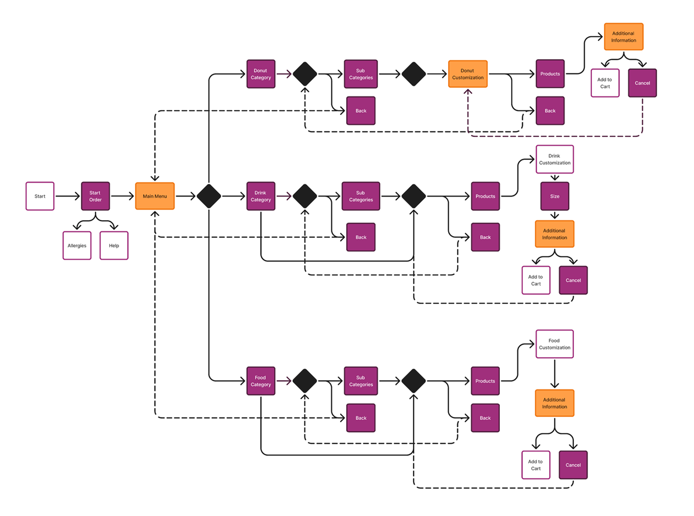
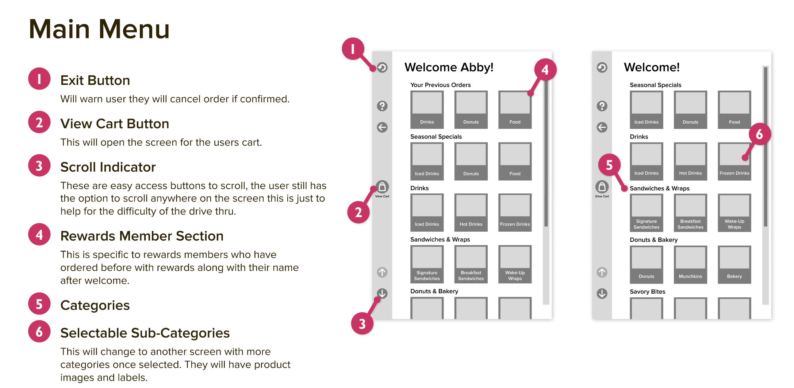
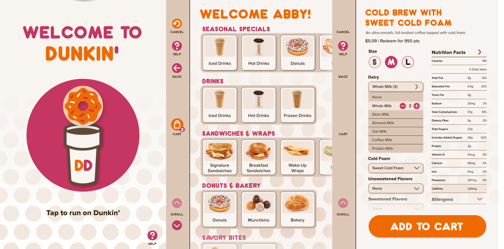

DUNKIN' DRIVE THRU KIOSK
01 // PROJECT OVERVIEW
GOAL:
Design a consumer-oriented, touch screen experience for use in a retail environment.
APPROACH:
Design an accessible and easy to use kiosk tailored to fit into consumer use in a drive thru.
ACCOMMODATION FOR THE DRIVE THRU:
To create a design that was efficient for drive thru use, I had to take in to account the limited reach of the user. I ensured that the elements of the design remained left aligned, like the navigation, for easy access out a car window. Most users will be using their left hand which is typically a non-dominant hand for users. This being said the elements of the design had to remain large enough so that the unsteady reach of a user could easily click the items. I also added in the adjustable settings for the kiosk to accommodate all type of vehicles. For users that aren’t interested in using the kiosk, I added in a “call for employee” button in the help menu which is available at all stages of the user flow. The drive thru would then operate as a standard speaker from employee to consumer.
02 // PRODUCT REQUIREMENTS
Before designing this kiosk, I had to take in consideration many aspects such as Dunkin's target audience, hardware considerations, content, and functionality. I analyzed Dunkin's menu items to be able to consider what items would need a unique user flow. I also researched kiosks that would be suitable for this experience. Functionally, customization, payment, and user errors were all considered before designing the kiosk.

03 // WORKFLOW DIAGRAMS
Next, I created workflow diagrams to visualize the user journey through the kiosk. These diagrams helped identify potential pain points and areas for improvement to create a seamless user experience.

04 // MOCKUPS
I created a variety of mockups for this project to better be able to visualize the final product. I created a simplified 3D render of the kiosk in the drive thru to visualize the layout and functionality of the kiosk in a live setting. I then created a physical prototype of the screen size to test for usability. This mockup showed variations of text sizes, button sizes, and containers. After creating this physical mockup, I was able to select the best design options for the final implementation.


05 // WIREFRAMES
I developed several wireframes to outline the structure and layout of the kiosk interface. These wireframes helped me to organize the content and functionality in a way that would be intuitive for users.

06 // FINAL COMPOSITIONS
After wireframing, I developed a style guide to ensure consistency in the final design implementation. I outlined assets such as buttons, fonts and sizes, and grids. After creating the final compositions, I created a prototype in Figma. This prototype was segmented into the previous work flows and the interactions were recorded. I then compiled the clips in After Effects to smoothly transition between each and added an indicator to where the user was clicking. The final prototype displays a clear user flow and interaction with the kiosk.

07 // TAKEAWAYS
This project taught me the importance of research and iteration in the design process. By continuously testing and refining my ideas, I was able to create a more user-friendly and effective kiosk interface. I believe this project helped me learn a more professional workflow and how to create a more user-centered design. I am proud of the final result and the impact it could have on the user experience in a drive thru setting.
KEEP EXPLORING THE ARCHIVE
See more of my work in UI/UX, branding, print, and packaging design.
[ TRANSMISSION_CHANNEL ]
[✉] suplickiabby@gmail.com ➔ [✆] (716) 220-6374 ➔ LINKEDIN_PROFILE ➔ RESUME_DOWNLOAD ➔